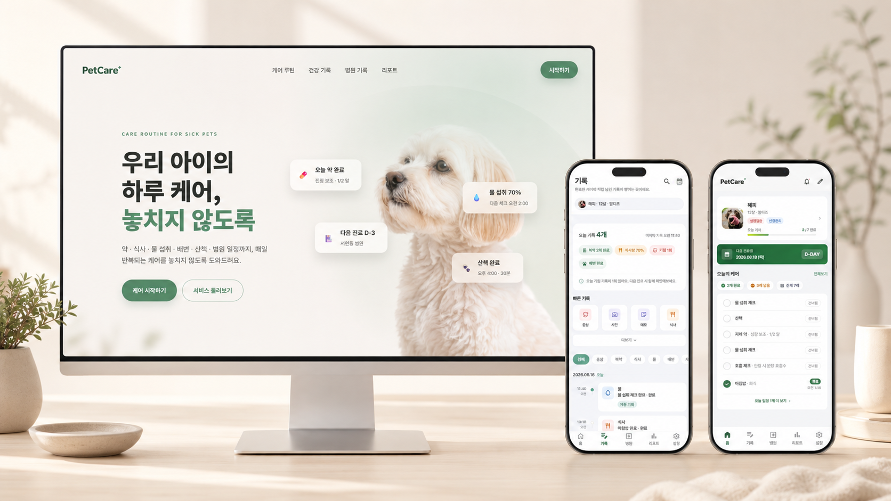
Web · Commerce · UI Designer
실무 경험을
바탕으로
정보와 화면의
흐름을 설계합니다.
웹사이트 운영과 이커머스 콘텐츠 디자인 경험을 기반으로, UI·UX와 반응형 웹까지 작업 범위를 확장하고 있습니다.
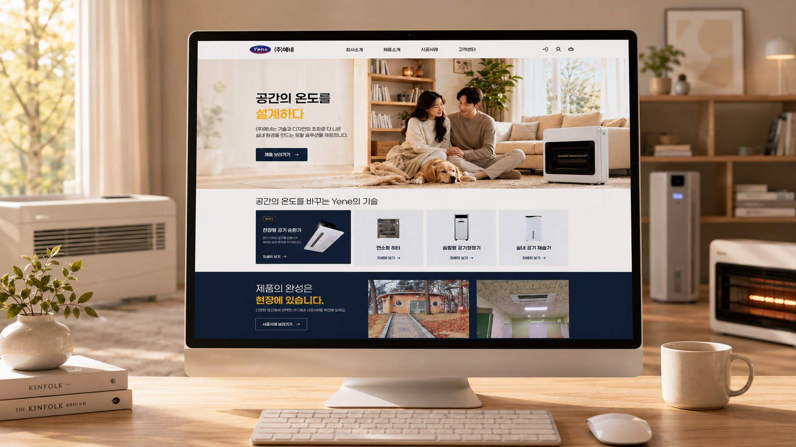
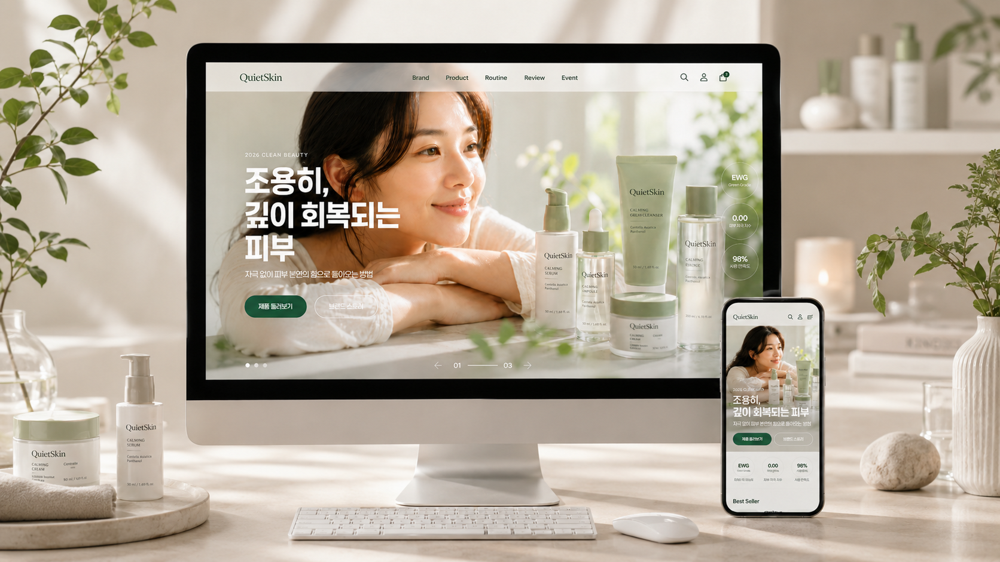
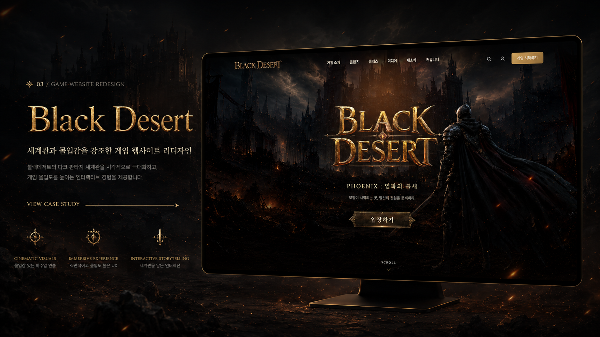
Auto · Drag · Arrow
SELECTED WORKS
Featured Projects
기존 실무 경험에 UI·UX 설계와 웹 구현 역량을 더하기 위해 진행한 최근 프로젝트입니다.
01
UI/UX Design
Mobile App · Web App · Flow Design
02
Web Site
Corporate · Brand · Landing
03
Detail Page
Commerce · Product · Promotion
04
Graphic / Print
Poster · Banner · Editorial
05
AI Visual & Vibe Coding
AI-generated Image · Vibe Coding · Product Cut
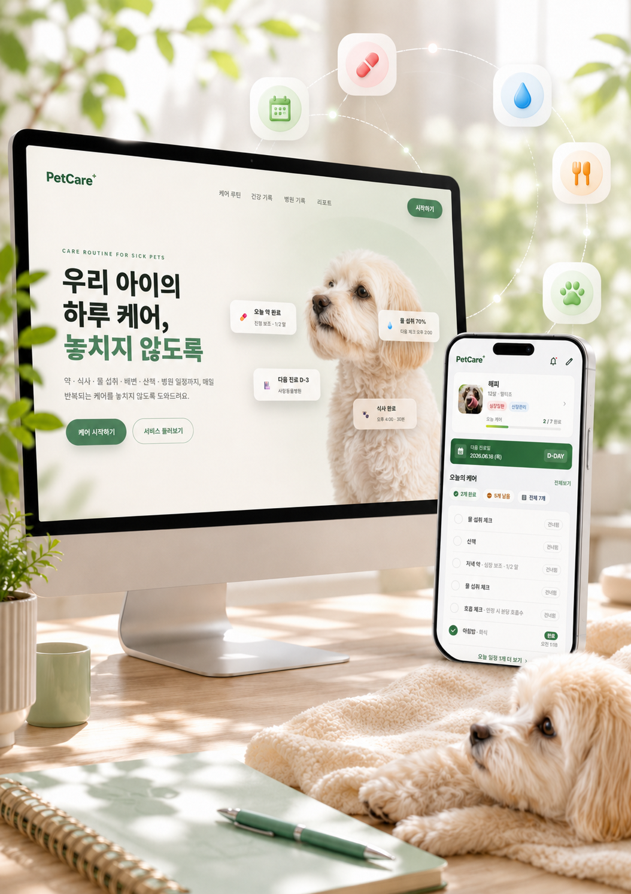
01 · HEALTH CARE WEB APP
Case Study
PetCare+ care, daily
노령견·질환견 보호자가 매일 반복하는 복약, 식사, 증상 확인과 병원 일정을 한곳에서 관리할 수 있도록 설계한 반려견 케어 웹앱. 기록을 쌓는 것보다 오늘 해야 할 케어를 놓치지 않는 경험에 초점을 맞췄습니다.
FigmaPhotoshopHTML/CSSGitHubClaude
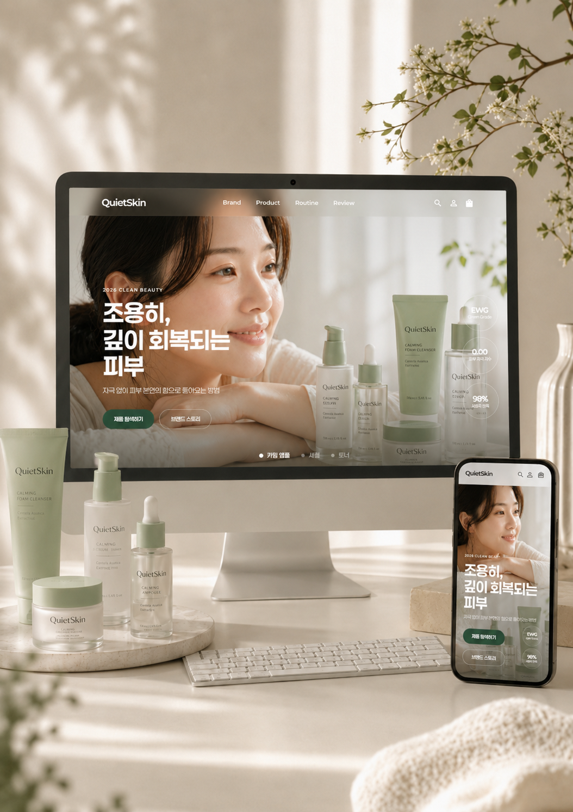
02 · BEAUTY BRAND COMMERCE
Case Study
QuietSkin calm & restore
'피부의 휴식과 조용한 회복'이라는 브랜드 방향을 바탕으로 제작한 뷰티 커머스 사이트. 브랜드 감성이 제품 탐색과 구매 흐름 안에서도 자연스럽게 이어지도록 콘텐츠 구조와 화면 경험을 설계했습니다.
FigmaPhotoshopIllustratorJavaScriptMidjourney
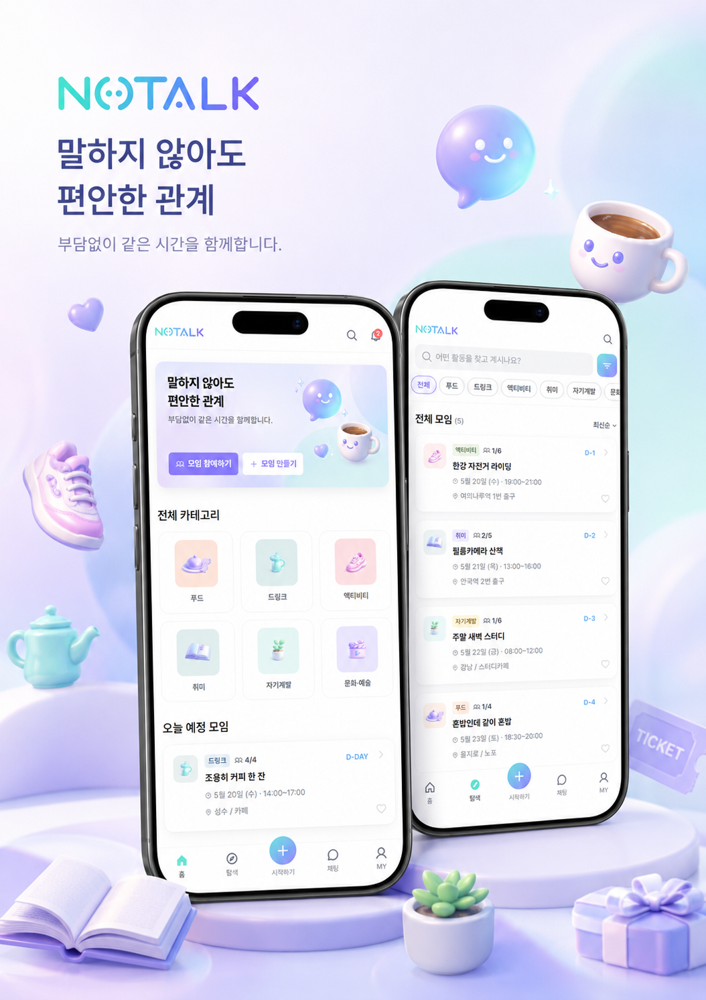
03 · SOCIAL MEETUP APP
Case Study
NoTalk meet without words
캐릭터와 뱃지로 텍스트 없이 나를 표현하는 소모임 앱. 언어 대신 시각 요소로 관심사를 연결하는 새로운 만남 방식을 설계했습니다. 4인 팀 프로젝트로 기획부터 구현까지 협업했습니다.
FigmaPhotoshopHTMLCSSJavaScript
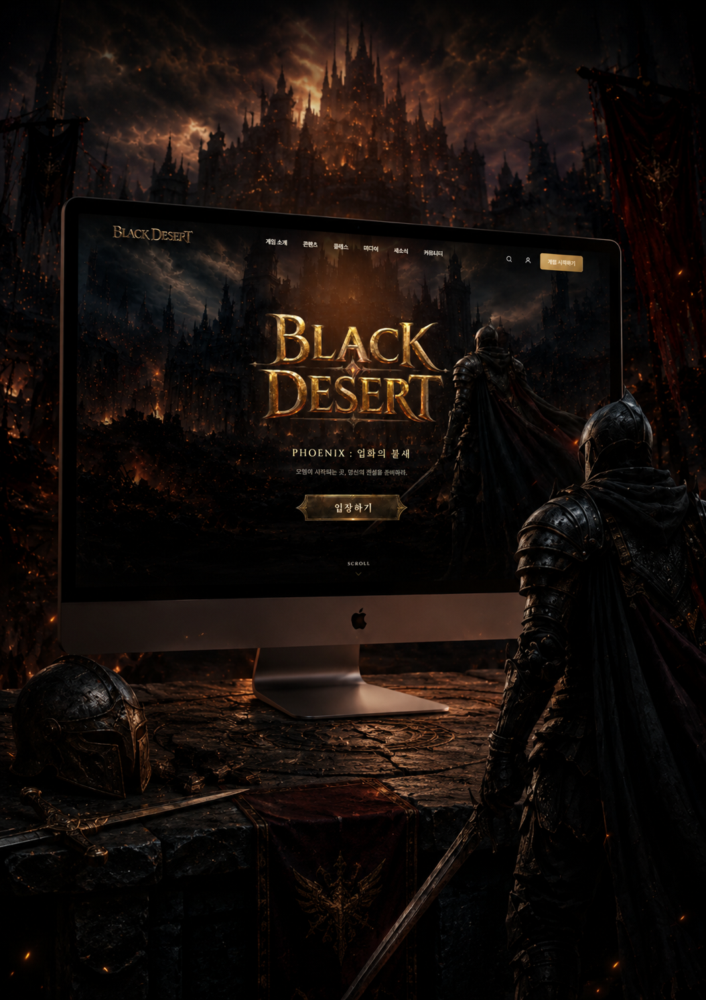
04 · IMMERSIVE GAME WEBSITE
Case Study
Black Desert enter the world
검은사막의 세계관과 몰입감을 웹 경험으로 확장한 게임 사이트 리디자인. 던전 진입, 문 개방, 제단 연출 등 단계적인 인터랙션을 활용해 사용자가 콘텐츠에 자연스럽게 진입하도록 구성했습니다.
FigmaPhotoshopGSAPHTMLCSS
ABOUT
경험에 머무르지 않고, 변화에 맞춰 배우는 디자이너
웹사이트 운영과 브랜드 콘텐츠, 상세페이지 디자인을 중심으로 오랜 시간 실무를 경험했습니다. 상품의 장점을 정리하고, 많은 정보를 사용자가 이해하기 쉬운 순서로 구성하는 일이 제 작업의 중심이었습니다. 최근에는 기존의 시각 디자인 경험에 UI·UX 설계, 반응형 웹, 퍼블리싱과 AI 도구 활용을 더하고 있습니다. 단순히 보기 좋은 화면보다 실제로 운영할 수 있고, 사용자의 행동 흐름이 자연스러운 결과물을 만드는 것을 목표로 합니다.
- UI/UX Design
- Responsive Web
- Brand Experience
- HTML / CSS Publishing
 Figma
Figma Photoshop
Photoshop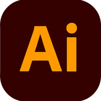
Illustrator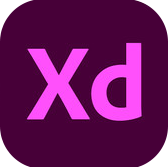
Adobe XD- VS Code
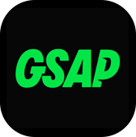
GSAP ChatGPT
ChatGPT Gemini
Gemini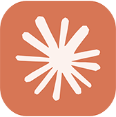
Claude Midjourney
Midjourney


PROCESS
구조적 설계에서 코드 구현까지
-
01
Research
레퍼런스 및 경쟁 서비스 분석
서비스의 핵심 목표와 명확히 정의하고, 경쟁 서비스 분석을 통해 시장 내 차별화 기회와 해결해야 할 실질적인 페인 포인트를 도출합니다.
-
02
Structure
정보 구조 및 유저 플로우 설계
도출된 인사이트를 기반으로 IA와 콘텐츠 우선순위를 정의합니다. 정보의 우선순위를 정리하여 사용자가 직관적으로 도달할 수 있는 동선을 설계합니다.
-
03
Wireframe & UI Design
비주얼 가이드 및 고도화
와이어프레임으로 화면의 뼈대를 견고히 다진 후, 브랜드 아이덴티티가 반영된 고해상도 UI를 디자인합니다. 컴포넌트 중심 설계로 일관성 있는 비주얼을 구축합니다.
-
04
Publishing
웹 표준 기반의 반응형 퍼블리싱
웹 표준을 준수하며 HTML과 CSS를 중심으로 반응형 화면을 구현하고 필요한 인터랙션을 적용합니다. 디자이너의 의도가 온전히 담긴 레이아웃과 자연스러운 인터랙션을 완성합니다.